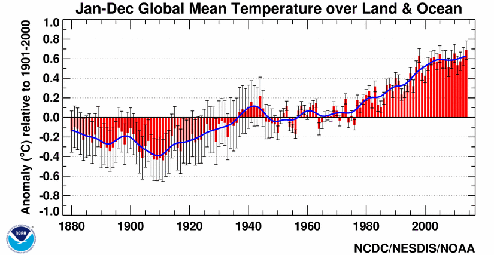

To "believe in global warming," as the phase is popularly used, one must accept these four premises:
Let's look at these four premises individually.
The University Corporation for Atmospheric Research says,
|
Averaged over all land and ocean surfaces, temperatures warmed roughly 1.53°F (0.85ºC) from 1880 to 2012, according to the Intergovernmental Panel on Climate Change (see page 3 of the IPCC's Climate Change 2013: The Physical Science Basis, Summary for Policymakers - PDF ). |
|
 1 |
|---|
Is this actually true? More to the point, is it possible to make the measurements to prove it?
The vertical error bars on the graph show an uncertainty of about 0.2oC (about 0.36oF) after the year 2000. The error bars for the 1880's is about 0.4oC (less than 1 degree F). Do you really believe that temperature of the entire globe (land and sea) in 1884, was measured to an accuracy of 1 degree F?
I live in the Mojave Desert near a Navy research laboratory at China Lake, California. It was established in the 1940's to design, build, and test the Sidewinder air-to-air missile. It now employs nearly 3,000 scientists, engineers, and technicians. Some of them take careful measurements of temperature, humidity, air pressure, and wind speed, because such things are important to record for the evaluation of weapons tests. Given all this data, what was the temperature of China Lake last year?
That leads to the question of, "What is the most accurate way to express the temperature of China Lake last year?" Should one take the average of all the temperature measurements taken at noon every day? Should one take the average of all the temperature measurements taken every hour day and night? Should one determine the temperature of a particular day by adding that day's high temperature to that day's low temperature and dividing by 2, then average these 365 daily temperatures?
It is doubtful that all these methods would give exactly the same result to within 0.2oC. Which one is correct?
In 1884, as far as we know, no prospectors made daily (or hourly) trips from their gold mines in the hills south of town, down to the valley floor where the Navy laboratory is now, to take temperature measurements. If they did, the prospectors' notes are lost. So, we have no way of knowing if the temperature at China Lake in 1884 was cooler than it was in 2014.
If we can't calculate the temperature change of China Lake over 134 years, how can we calculate the temperature change of the whole world over that time period? Bear in mind that much more than half of the globe is covered with water. The number of measurements of temperature over water locations is probably much less than the number of temperature measurements over land. Should the water temperatures given more weight because they represent more area per measurement? By that I mean, when I watch the evening weather reports on Los Angeles TV channels, they give different temperatures for the different parts of Los Angeles. Is it fair to give equal weight to 10 or so Los Angles temperature readings as one reading several hundred miles off the coast in the Pacific Ocean? How many sailors kept careful temperature readings at sea in 1884? Were their thermometers accurate enough to measure temperature to a tenth of a degree? Would it make any difference at what time of day the sailors took their measurements?
Recent news articles provide good reasons to question the climate analyses.
Skewed data hid rapid temperature increase of most recent decadesOne of the biggest mysteries of modern climate science may never have really existed, updated climate analyses suggest. Following decades of warming and a hot 1998, Earth's average surface temperature seemingly plateaued. This warming hiatus, as it came to be known, had climate researchers scrambling for an explanation. Now measurements and analysis by the National Oceanic and Atmospheric Administration suggest that the apparent hiatus was not an actual climate trend. Instead, it was an artifact of incomplete and biased data. 2 |
Here's how the scientists who wrote the report tried to explain their change in position in a peer-reviewed scientific journal.
|
The Intergovernmental Panel on Climate Change (IPCC) Fifth Assessment Report concluded that the global surface temperature "has shown a much smaller increasing linear trend over the past 15 years [1998-2012] than over the past 30 to 60 years." ... The data used in our long-term global temperature analysis primarily involve surface air temperature observations taken at thousands of weather-observing stations over land, and for coverage across oceans, the data are sea surface temperature (SST) observations taken primarily by thousands of commercial ships and drifting surface buoys. These networks of observations are always undergoing change. Changes of particular importance include (i) an increasing amount of ocean data from buoys, which are slightly different than data from ships; (ii) an increasing amount of ship data from engine intake thermometers, which are slightly different than data from bucket seawater temperatures; and (iii) a large increase in land-station data, which enables better analysis of key regions that may be warming faster or slower than the global average. We address all three of these, none of which were included in our previous analysis used in the IPCC report. 3 |
The scientists did not get in a time machine and travel back to make new temperature measurements. They just chose to analyze the same data differently to get a more acceptable answer. Because comparing data from ocean buoys and engine intake thermometers is like comparing apples and oranges, the data had to be "corrected" into some kind of generic fruit. Furthermore, the heat capacity of water is much greater than the heat capacity of air, so air temperatures and water temperatures aren't really comparable, either. (The last time you went to the beach, was the water temperature the same as the air temperature?)
How does one know that the new analysis is more accurate than the old analysis? It's simple. The new analysis gives the "correct" (that is, the desired) answer.
The honest conclusion really has to be that there is no legitimate way to compare temperature data taken today with temperature data taken more than 100 years ago. Therefore, one cannot say with any certainty that the global climate really has warmed 1.53 degrees in the last 100 years.
But let's suppose that the global climate really is warming. How do we know human activity is to blame?
There seems to be good evidence that the climate has changed in the past. Glaciers covered some parts of northern American states at some time in the past. Fossils of tropical vegetation have been found in polar regions. Clearly, the climate has changed--but not because of men cutting down vast forests, or people driving too many miles to work. The climate in various locations changed a lot more than 1.53 degrees long before man started engaging in "climate destroying activities." Solar activity and volcanic eruptions may have had something to do with it--but man certainly isn't to blame for climate changes more than 1,000 years ago.
Furthermore, the word "blame" is judgmental and prejudicial. Would the world really be a better place if Minnesota, Michigan, and Wisconsin were still covered by a huge glacier because Earth had not warmed since the last ice age? Cows can not live on glaciers; doan-cha-no?
During the Viet Nam War, I had a friend who was employed in the defense industry. His job was to find ways to modify the weather for military advantage. What he did was classified, so he never told me exactly what he did, or how well it worked. Although I have no direct knowledge, I think it is safe to assume that Russia, China, the major European nations, and perhaps others, have at one time or another, to a greater or lesser degree, also pursued weather modification research. And, as with most military research, there is a possibility of technology transfer from military applications to civilian applications.
As far as I can tell, my friend's work in weather modification did not affect the outcome of the Viet Nam War. Furthermore, if secret weather modification programs have continued since that time, there has been no technology transfer which could have prevented the severe flooding over large portions of United States in the last few months (spring of 2015). If the U.S. military had discovered a way to modify the weather, one would hope it would have been used to alleviate the drought in California at the same time.
There is no reason to believe that man has the ability to intentionally cause local disturbances of the atmosphere that result in significant changes in the weather in a limited geographic area. As hard as man tries, he cannot make it rain, stop the rain, or prevent hurricanes and tornados. Yes, he can make it warmer in winter, or cooler in the summer, indoors; but the best he can do to change the temperature outdoors is to burn some tires in orchards to keep the fruit from freezing (and that doesn't always work).
Therefore, I doubt that driving fewer miles, or cutting fewer trees, could make a significant difference in the global climate.
But, to go along with the climate change agenda, one must really believe that man has the ability to affect the global climate--despite all the evidence to the contrary.
Suppose that science proves that there really is a global warming trend, and that man caused it, and that man can stop it. There remains the political issue of whether or not one world government should force the entire human race to modify its activities to change the climate.
Trading carbon credits does not change the amount of pollution--it simply changes who gets to pay for the privilege of creating the pollution. Selling carbon credits simply changes who makes the most profit from pollution. It has no effect on the climate at all.
How many businesses should the government force to close to reduce carbon dioxide production? How much should the government tax those businesses it allows to remain open?
Is it worth causing 1,000 people to lose their jobs to decrease the temperature 0.001 degree? Is it worth causing 1,000,000 people to lose their jobs to decrease the temperature 0.001 degree? What really is the correct jobs/degree ratio (if such a ratio could even be calculated)? How much should one person be taxed if his carbon footprint increases the world temperature 0.0000001 degree? What economic price are we prepared to spend to "save the environment?"
In light of the facts that measurements of temperature don't really establish a global warming trend, and there is no evidence that man is responsible if there is such a trend, and that it is preposterous to believe that man could counteract such a trend if he tried, why would governments pass laws and treaties to stop the presumed global warming trend?
One must consider the possibility that these laws are motivated by desire for power. Historically there have been well-intentioned people who have wanted power because they truly believe that they can make the world better by keeping dumber people from doing stupid things. There have also been not-so-well-intentioned people who have wanted power because they want to enjoy the privileges that come with power.
Regardless of motivation, it has historically been the position of the United States that people should be free to live their lives with a minimum of government intervention.
The argument isn't really about science--it is about politics. That's why the issue is so clearly divided along political party lines. "Climate science" is just a smoke-screen to obscure the fact that global warming legislation is nothing more than a political power grab. Global warming legislation will not make the slightest difference to the global climate--but it will give the government the ability to restrict travel, control employment, and finance other government programs that limit freedom. Global warming legislation is a simply another step toward turning citizens into slaves, entirely dependent upon the government.
It isn't about "saving the planet." It's about taking our freedom.
Footnotes:
1 https://www2.ucar.edu/news/how-much-has-global-temperature-risen-last-100-yearsDo-While Jones is the pen name of R. David Pogge.